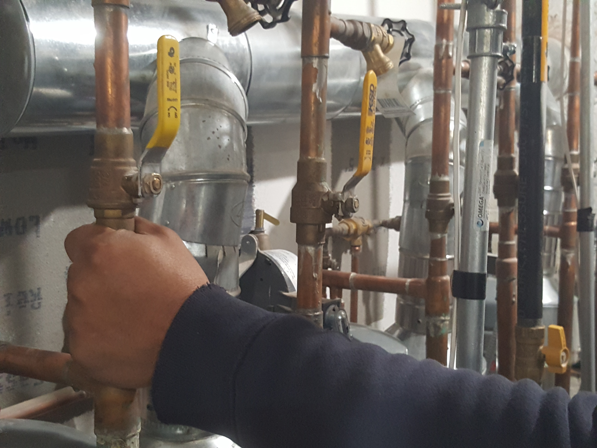
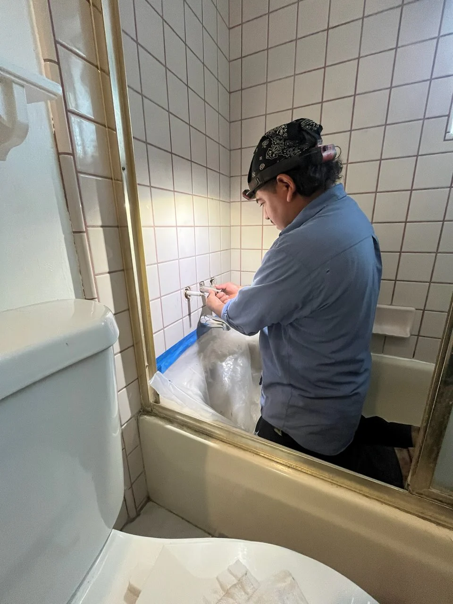
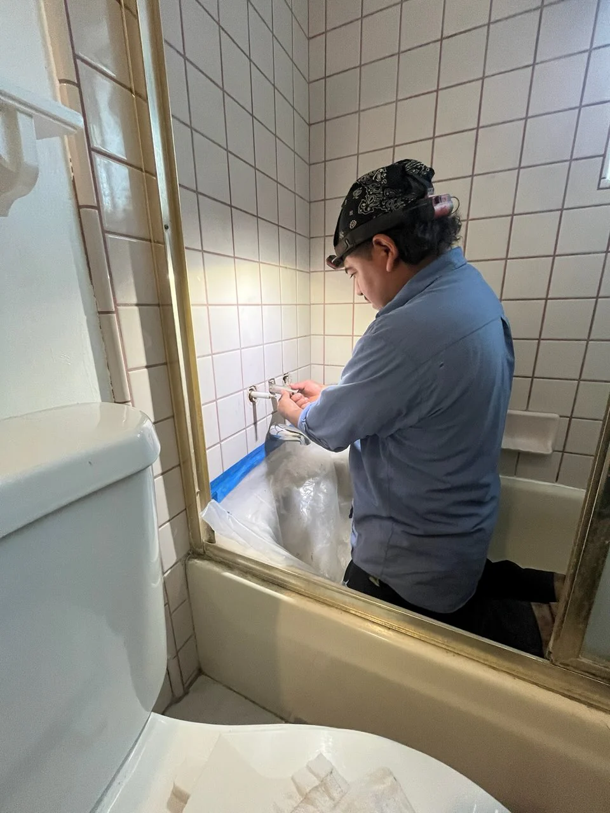
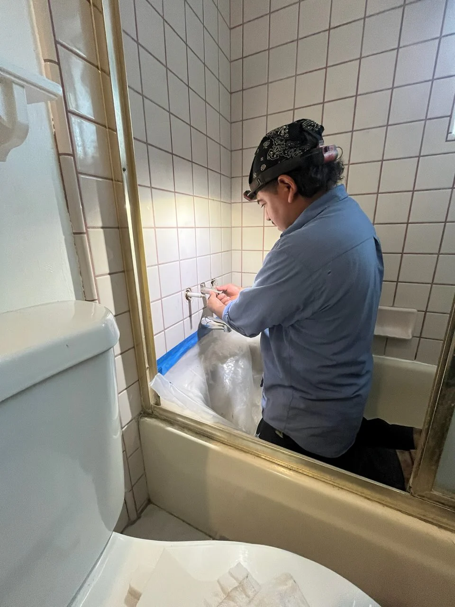

What Are Plumbing Services?
Plumbing services involve installing, repairing, and maintaining water and drainage systems in your home or business. From leaky faucets to full pipe installations, plumbing ensures reliable water flow and safe waste disposal.
Why Are Plumbing Services Important?
- Prevents leaks, water damage, and costly repairs
- Ensures safe and clean water supply
- Improves efficiency of water systems
- Supports comfort and functionality in everyday use
- Keeps your property compliant with plumbing codes
Steps in a Plumbing Project
- Inspection: Identify plumbing issues or system needs.
- Repair/Installation: Fix leaks, replace pipes, or install new fixtures.
- Testing: Check for proper water flow and pressure.
- Finishing: Seal, clean, and ensure safe functionality.
- Final Check: Verify compliance with local plumbing codes.
Signs You May Need Plumbing Work
- Leaky faucets, pipes, or fixtures
- Slow drains or recurring clogs
- Low water pressure
- Unusual noises or odors from plumbing
- Water stains, dampness, or mold growth
Note: Reliable plumbing services protect your home, conserve water, and prevent costly damages.


 

Back to Services
